Abstract
Seabed ore sampling by a tethered remotely operated vehicle that works from a mobile catamaran mother ship must fit a time budget and an energy budget drawn from one store on the catamaran. However, the tether couples the two vehicles through a reach that depends on the depth of the vehicle and a drag load that grows with the motion of the catamaran. Therefore, we propose the Tether-Aware Coupled Orienteering planner to plan the motion of the catamaran together with the sampling visits. The planner turns the tether limit into one reach disc per visit and charges the load of a moving tether to the energy of each leg. A convex program places the catamaran waypoints and sets the leg durations of every candidate order of visits. An order search keeps the plan with the largest value weighted by the probability that each visit is completed within both budgets. The planner replans after every sample. We fitted the cost model to simulator legs and to seven field dives of a work-class vehicle, whose 78 sampling stations lasted 581 s on average. In two hardware-in-the-loop scenarios with PX4 on a flight controller, the planner kept 6.2% and 17.0% more sample value than a fixed catamaran. On the field dives with budgets cut to 70%, the planner kept 47.1 samples against 44.0 for a fixed catamaran and 45 for the crew of the dives. These results show that planning the catamaran and the tethered vehicle as one coupled problem raises the value of a budgeted sampling dive.
Video
The narration is synthetic. Subtitles are burned into the video.
The coupled sampling task
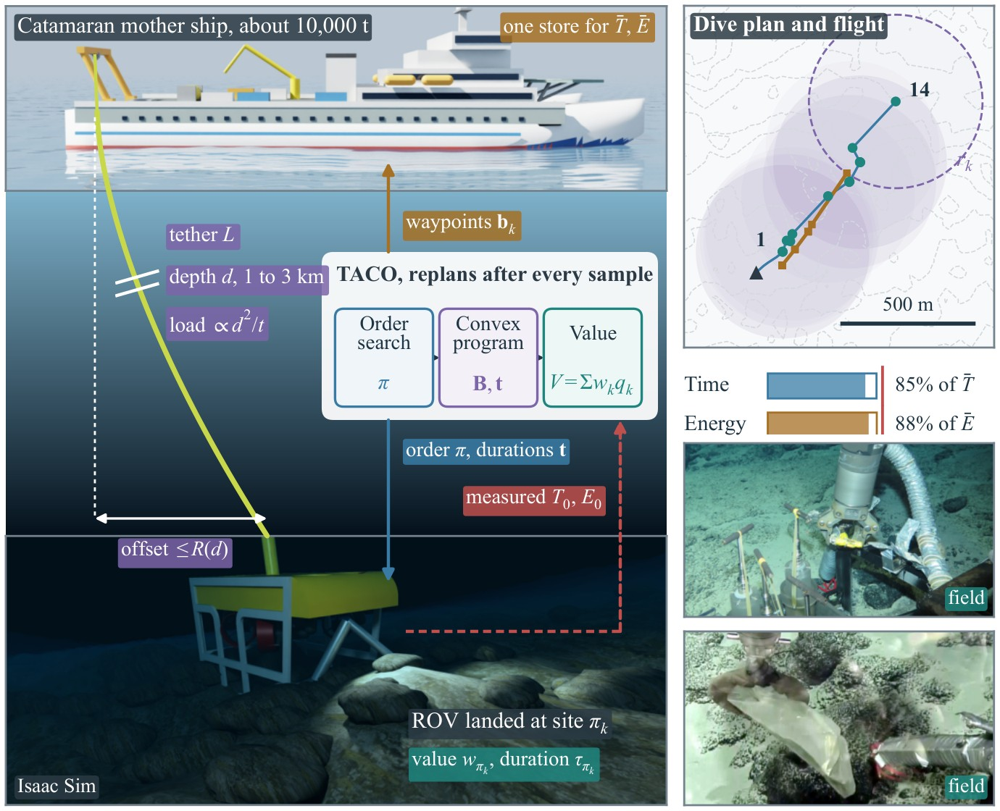
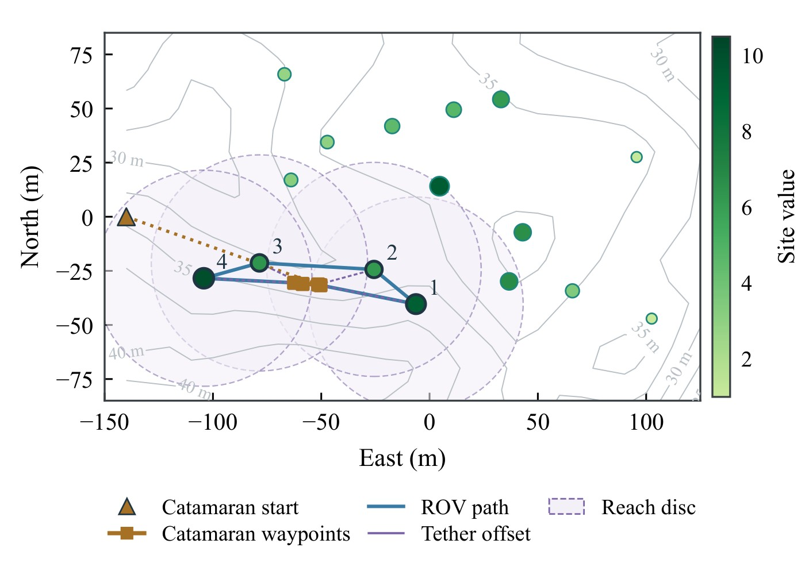
Method
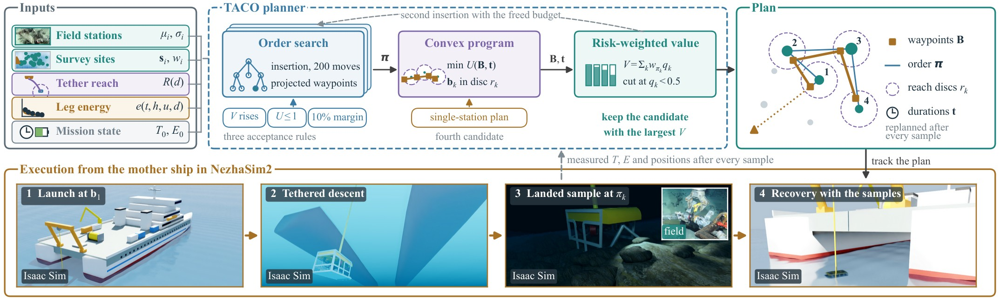
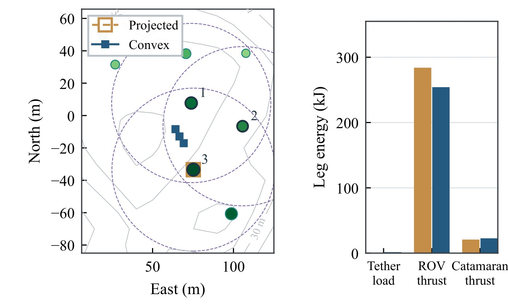
Experiment design
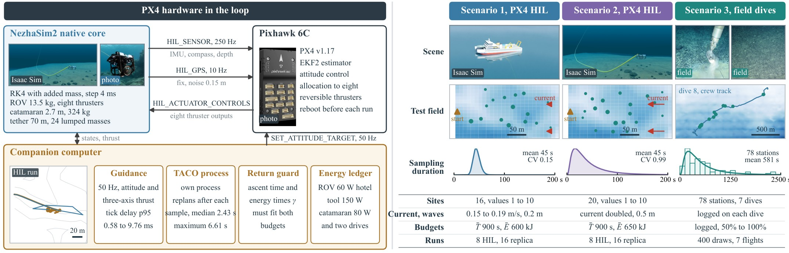
Hardware in the loop
| Planner | Scenario 1 kept | Within budgets | Scenario 2 kept | Within budgets |
|---|---|---|---|---|
| TACO | 33.1 | 8/8 | 29.0 | 8/8 |
| Fixed base | 31.2 | 8/8 | 24.8 | 8/8 |
| Cluster-route | 19.2 | 8/8 | 20.2 | 8/8 |
Mean value kept per instance over eight instances per scenario.
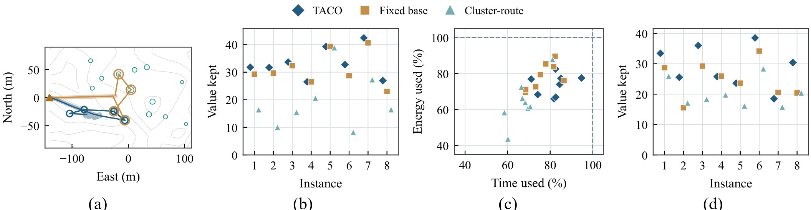
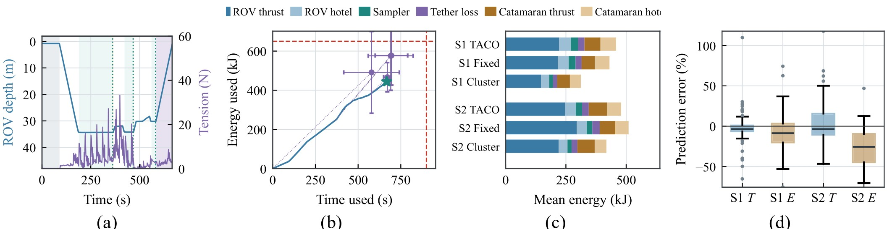
Field dives of a work-class ROV
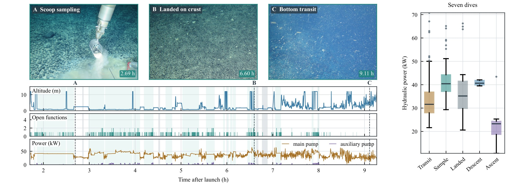
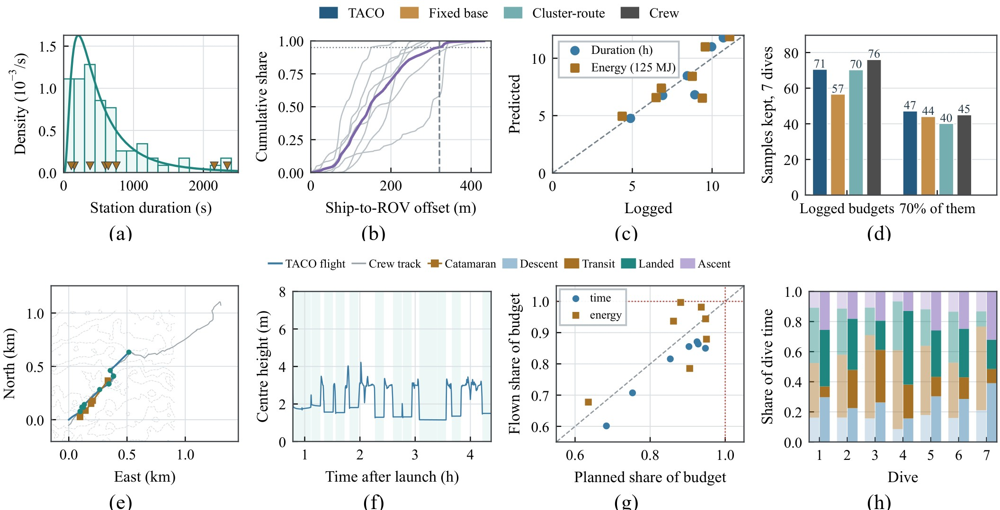
Ablation, budget level and optimality
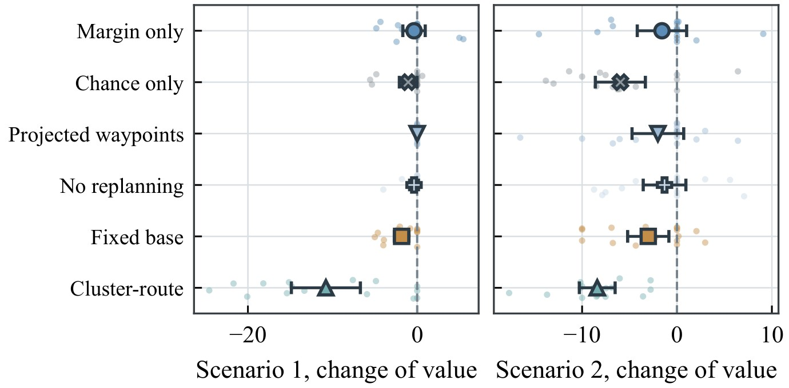
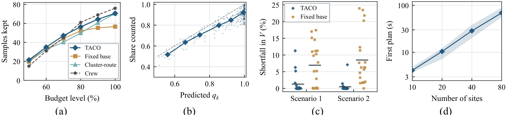
Citation
@article{bao2026taco,
title = {Tether-Aware Coupled Orienteering of a Catamaran Base and Its Tethered
{ROV} for Time- and Energy-Bounded Seabed Ore Sampling},
author = {Bao, Yuhang and Wang, Jiaqing},
journal = {IEEE Transactions on Intelligent Vehicles (under review)},
year = {2026}
}